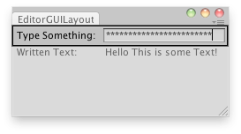

EditorGUILayout.PasswordField
public static string PasswordField(string password,
params GUILayoutOption[] options);
public static string PasswordField(string password,
GUIStyle style,
params GUILayoutOption[] options);
public static string PasswordField(string label,
string password,
params GUILayoutOption[] options);
public static string PasswordField(string label,
string password,
GUIStyle style,
params GUILayoutOption[] options);
public static string PasswordField(GUIContent label,
string password,
params GUILayoutOption[] options);
public static string PasswordField(GUIContent label,
string password,
GUIStyle style,
params GUILayoutOption[] options);
Parameters
| label | Optional label to display in front of the password field. | |
| password | The password to edit. | |
| style | Optional GUIStyle. | |
| options | An optional list of layout options that specify extra layout properties. Any values passed in here will override settings defined by the style.See Also: GUILayout.Width, GUILayout.Height, GUILayout.MinWidth, GUILayout.MaxWidth, GUILayout.MinHeight, GUILayout.MaxHeight, GUILayout.ExpandWidth, GUILayout.ExpandHeight. |
Returns
string The password entered by the user.
Description 描述
Make a text field where the user can enter a password.
This works just like GUILayout.PasswordField, but correctly responds to select all, etc. in the editor,
and it can have an optional label in front.

Simple window that visualizes what you have typed in the password field.
// Editor Script that creates a password field and lets you // visualize what have you typed in a label.
using UnityEditor; using UnityEngine;
public class ExampleClass : EditorWindow { string text = "Some text here";
[MenuItem("Examples/Editor Password field usage")] static void Init() { ExampleClass window = (ExampleClass)GetWindow(typeof(ExampleClass)); window.Show(); }
void OnGUI() { text = EditorGUILayout.PasswordField("Type Something:", text); EditorGUILayout.LabelField("Written Text:", text); } }